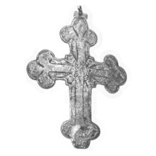

Catalog › CE-0045 · LOV1999-39
Placă posterioară de cruce pectorală cu cruce gravată cu capete de crin
a doua jumătate a sec. XIV (1351–1400) · Fülek-Püspöki (azi Biskupice, Slovacia), Slovacia · Muzeul Național Maghiar, Budapesta, inv. 1872.283.4
single valve of a reliquary cross, bronz; a doua jumătate a c. XIV (1351–1400); found at Fülek-Püspöki (azi Biskupice, Slovacia), Slovacia; kept at Muzeul Național Maghiar, Budapesta.


Identificare
- Categorie
- Valvă izolată
- Material
- Bronz
- Tehnică
- Turnare în relief; Gravare (incizie)
- Dimensiuni
- Î 80 × L 62 mm
Iconografie
- Descriere revers
- Spate gol, cu margine de 6 mm; chenar de linii gravate, în mijloc o cruce gravată cu brațele terminate în crini, cu raze diagonale la întretăierea brațelor. Brațe cu trei capete (trifoi), cu lărgire pătrată la întretăiere.
Datare și atribuire
- Datare
- a doua jumătate a sec. XIV (1351–1400)
- Centru
- Atelier local
Descoperire
- Localitate
- Fülek-Püspöki (azi Biskupice, Slovacia)
- Țară
- Slovacia
- Context
- Colecție (fără context)
- Coordonate
- 48.2590° N, 19.8277° E
- Precizia locului
- Doar localitatea
Păstrare și referințe
- Colecție
- Muzeul Național Maghiar, Budapesta
- Nr. inventar
- 1872.283.4
- Bibliografie
- Zs. Lovag, Mittelalterliche Bronzegegenstände des Ungarischen Nationalmuseums (Catalogi Musei Nationalis Hungarici, Series Archaeologica III), Budapest, 1999, p. 31, cat. nr. 39, reprodusă la Abb. 39 (planșele, p. 136). Bibliografie citată în sursă: Nepublicată în sursă.
- Figura
- Abb. 39
- Planșe
- Lovag 1999, planșele, p. 136
- Observații
- Datare după Lovag: a doua jumătate a sec. XIV. XIV. Locul de descoperire este necunoscut; dăruită muzeului de preotul din Fülek-Püspöki, împreună cu alte obiecte. Sus, ureche de agățare; pe margine, fragmentul unui inel al închizătorii cu balamale; jos, închizătoarea este ruptă. Nepublicată în sursă. Coordonate: ale localității (aproximative), nu date în sursă.
Citare: Corpus Encolpiorum, CE-0045, Placă posterioară de cruce pectorală cu cruce gravată cu capete de crin, --root/piese/LOV1999-39/ (accesat 2026-10-17).